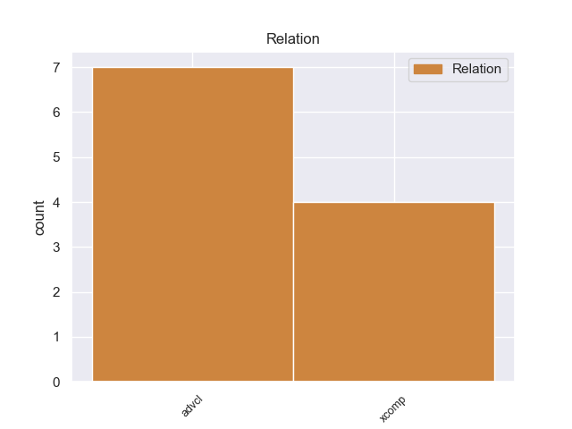
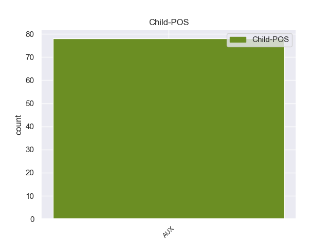

Distribution of features within this leaf



Agreement Rules sorted by frequency.
- When the dependent token is the adverbial clause modifier(advcl) of the head token, and the dependent token is VERB.
1 Όπως _ _ _ _ 0 _ _ _
2 ανέφεραν _ _ _ _ 0 _ _ _
3 , _ _ _ _ 0 _ _ _
4 « _ _ _ _ 0 _ _ _
5 οι _ _ _ _ 0 _ _ _
6 συμπλοκές _ _ _ _ 0 _ _ _
7 ξέσπασαν ξεσπώ VERB VERB Aspect=Perf|Mood=Ind|Number=Plur|Person=3|Tense=Past|VerbForm=Fin|Voice=Act 0 _ _ _
8 σ _ _ _ _ 0 _ _ _
9 την _ _ _ _ 0 _ _ _
10 επαρχία _ _ _ _ 0 _ _ _
11 Αμπιγιάν _ _ _ _ 0 _ _ _
12 , _ _ _ _ 0 _ _ _
13 όταν _ _ _ _ 0 _ _ _
14 οι _ _ _ _ 0 _ _ _
15 ένοπλοι _ _ _ _ 0 _ _ _
16 πυροδότησαν πυροδοτώ VERB VERB Aspect=Perf|Mood=Ind|Number=Plur|Person=3|Tense=Past|VerbForm=Fin|Voice=Act 7 advcl _ _
17 αυτοκίνητα _ _ _ _ 0 _ _ _
18 παγιδευμένα _ _ _ _ 0 _ _ _
19 με _ _ _ _ 0 _ _ _
20 εκρηκτικά _ _ _ _ 0 _ _ _
21 και _ _ _ _ 0 _ _ _
22 κατέλαβαν _ _ _ _ 0 _ _ _
23 στρατιωτικό _ _ _ _ 0 _ _ _
24 φυλάκιο _ _ _ _ 0 _ _ _
25 σ _ _ _ _ 0 _ _ _
26 την _ _ _ _ 0 _ _ _
27 περιοχή _ _ _ _ 0 _ _ _
28 Κουντ _ _ _ _ 0 _ _ _
29 κοντά _ _ _ _ 0 _ _ _
30 σ _ _ _ _ 0 _ _ _
31 την _ _ _ _ 0 _ _ _
32 πρωτεύουσα _ _ _ _ 0 _ _ _
33 της _ _ _ _ 0 _ _ _
34 επαρχίας _ _ _ _ 0 _ _ _
35 Ζίνζιμπαρ _ _ _ _ 0 _ _ _
36 » _ _ _ _ 0 _ _ _
37 . _ _ _ _ 0 _ _ _
1 Οι _ _ _ _ 0 _ _ _
2 οδηγίες _ _ _ _ 0 _ _ _
3 οφείλουν οφείλω VERB VERB Aspect=Imp|Mood=Ind|Number=Plur|Person=3|Tense=Pres|VerbForm=Fin|Voice=Act 0 _ _ _
4 , _ _ _ _ 0 _ _ _
5 όπως _ _ _ _ 0 _ _ _
6 αναφέρθηκε _ _ _ _ 0 _ _ _
7 , _ _ _ _ 0 _ _ _
8 να _ _ _ _ 0 _ _ _
9 συμφωνούν συμφωνώ VERB VERB Aspect=Imp|Mood=Ind|Number=Plur|Person=3|Tense=Pres|VerbForm=Fin|Voice=Act 3 xcomp _ _
10 μεταξύ _ _ _ _ 0 _ _ _
11 τους _ _ _ _ 0 _ _ _
12 . _ _ _ _ 0 _ _ _
Disagree Examples:
1 Οι _ _ _ _ 0 _ _ _
2 οδηγίες _ _ _ _ 0 _ _ _
3 οφείλουν οφείλω VERB VERB Aspect=Imp|Mood=Ind|Number=Plur|Person=3|Tense=Pres|VerbForm=Fin|Voice=Act 0 _ _ _
4 , _ _ _ _ 0 _ _ _
5 όπως _ _ _ _ 0 _ _ _
6 αναφέρθηκε αναφέρω VERB VERB Aspect=Perf|Mood=Ind|Number=Sing|Person=3|Tense=Past|VerbForm=Fin|Voice=Pass 3 advcl _ SpaceAfter=No
7 , _ _ _ _ 0 _ _ _
8 να _ _ _ _ 0 _ _ _
9 συμφωνούν _ _ _ _ 0 _ _ _
10 μεταξύ _ _ _ _ 0 _ _ _
11 τους _ _ _ _ 0 _ _ _
12 . _ _ _ _ 0 _ _ _
1 Οι _ _ _ _ 0 _ _ _
2 Έλληνες _ _ _ _ 0 _ _ _
3 όμως _ _ _ _ 0 _ _ _
4 , _ _ _ _ 0 _ _ _
5 εκτός _ _ _ _ 0 _ _ _
6 των _ _ _ _ 0 _ _ _
7 αποδεδειγμένων _ _ _ _ 0 _ _ _
8 ιστορικών _ _ _ _ 0 _ _ _
9 αξιώσεων _ _ _ _ 0 _ _ _
10 κατείχαν _ _ _ _ 0 _ _ _
11 και _ _ _ _ 0 _ _ _
12 πολυάριθμα _ _ _ _ 0 _ _ _
13 χωριά _ _ _ _ 0 _ _ _
14 ιδίως _ _ _ _ 0 _ _ _
15 σ _ _ _ _ 0 _ _ _
16 τα _ _ _ _ 0 _ _ _
17 νότια _ _ _ _ 0 _ _ _
18 που _ _ _ _ 0 _ _ _
19 σχεδόν _ _ _ _ 0 _ _ _
20 όλα _ _ _ _ 0 _ _ _
21 ήταν _ _ _ _ 0 _ _ _
22 ελληνόφωνα _ _ _ _ 0 _ _ _
23 , _ _ _ _ 0 _ _ _
24 και _ _ _ _ 0 _ _ _
25 παρά _ _ _ _ 0 _ _ _
26 την _ _ _ _ 0 _ _ _
27 εξάπλωση _ _ _ _ 0 _ _ _
28 της _ _ _ _ 0 _ _ _
29 βουλγαρικής _ _ _ _ 0 _ _ _
30 Εξαρχίας _ _ _ _ 0 _ _ _
31 με _ _ _ _ 0 _ _ _
32 επισκόπους _ _ _ _ 0 _ _ _
33 - _ _ _ _ 0 _ _ _
34 " _ _ _ _ 0 _ _ _
35 βοηθούς _ _ _ _ 0 _ _ _
36 " _ _ _ _ 0 _ _ _
37 - _ _ _ _ 0 _ _ _
38 , _ _ _ _ 0 _ _ _
39 τους _ _ _ _ 0 _ _ _
40 λεγόμενους _ _ _ _ 0 _ _ _
41 protojereji _ _ _ _ 0 _ _ _
42 ( _ _ _ _ 0 _ _ _
43 = _ _ _ _ 0 _ _ _
44 κάτι _ _ _ _ 0 _ _ _
45 σαν _ _ _ _ 0 _ _ _
46 πρωτοσύγγελοι _ _ _ _ 0 _ _ _
47 ) _ _ _ _ 0 _ _ _
48 , _ _ _ _ 0 _ _ _
49 η _ _ _ _ 0 _ _ _
50 Ελληνική _ _ _ _ 0 _ _ _
51 Εκκλησία _ _ _ _ 0 _ _ _
52 συνέχισε συνεχίζω VERB VERB Aspect=Perf|Mood=Ind|Number=Sing|Person=3|Tense=Past|VerbForm=Fin|Voice=Act 0 _ _ _
53 να _ _ _ _ 0 _ _ _
54 κυριαρχεί κυριαρχώ VERB VERB Aspect=Imp|Mood=Ind|Number=Sing|Person=3|Tense=Pres|VerbForm=Fin|Voice=Act 52 xcomp _ SpaceAfter=No
55 . _ _ _ _ 0 _ _ _
1 Η _ _ _ _ 0 _ _ _
2 Κυβέρνηση _ _ _ _ 0 _ _ _
3 της _ _ _ _ 0 _ _ _
4 Λιβύης _ _ _ _ 0 _ _ _
5 αρνήθηκε αρνιέμαι VERB VERB Aspect=Perf|Mood=Ind|Number=Sing|Person=3|Tense=Past|VerbForm=Fin|Voice=Pass 0 _ _ _
6 να _ _ _ _ 0 _ _ _
7 προσφέρει προσφέρω VERB VERB Aspect=Imp|Mood=Ind|Number=Sing|Person=3|Tense=Pres|VerbForm=Fin|Voice=Act 5 xcomp _ _
8 σ _ _ _ _ 0 _ _ _
9 την _ _ _ _ 0 _ _ _
10 επιτροπή _ _ _ _ 0 _ _ _
11 του _ _ _ _ 0 _ _ _
12 ΟΗΕ _ _ _ _ 0 _ _ _
13 πρόσβαση _ _ _ _ 0 _ _ _
14 σ _ _ _ _ 0 _ _ _
15 την _ _ _ _ 0 _ _ _
16 περιοχή _ _ _ _ 0 _ _ _
17 . _ _ _ _ 0 _ _ _
1 Όμως _ _ _ _ 0 _ _ _
2 , _ _ _ _ 0 _ _ _
3 ο _ _ _ _ 0 _ _ _
4 Υπουργός _ _ _ _ 0 _ _ _
5 Δικαιοσύνης _ _ _ _ 0 _ _ _
6 διαβίβασε διαβιβάζω VERB VERB Aspect=Perf|Mood=Ind|Number=Sing|Person=3|Tense=Past|VerbForm=Fin|Voice=Act 0 _ _ _
7 την _ _ _ _ 0 _ _ _
8 αίτηση _ _ _ _ 0 _ _ _
9 άρσης _ _ _ _ 0 _ _ _
10 της _ _ _ _ 0 _ _ _
11 ασυλίας _ _ _ _ 0 _ _ _
12 , _ _ _ _ 0 _ _ _
13 συνοδευόμενη _ _ _ _ 0 _ _ _
14 από _ _ _ _ 0 _ _ _
15 τις _ _ _ _ 0 _ _ _
16 διαβιβαστικές _ _ _ _ 0 _ _ _
17 επιστολές _ _ _ _ 0 _ _ _
18 τόσο _ _ _ _ 0 _ _ _
19 του _ _ _ _ 0 _ _ _
20 Εισαγγελέα _ _ _ _ 0 _ _ _
21 Πλημμελειοδικών _ _ _ _ 0 _ _ _
22 όσο _ _ _ _ 0 _ _ _
23 και _ _ _ _ 0 _ _ _
24 του _ _ _ _ 0 _ _ _
25 Εισαγγελέα _ _ _ _ 0 _ _ _
26 Εφετών _ _ _ _ 0 _ _ _
27 , _ _ _ _ 0 _ _ _
28 χωρίς _ _ _ _ 0 _ _ _
29 να _ _ _ _ 0 _ _ _
30 προβαίνει προβαίνω VERB VERB Aspect=Imp|Mood=Ind|Number=Sing|Person=3|Tense=Pres|VerbForm=Fin|Voice=Act 6 advcl _ _
31 σε _ _ _ _ 0 _ _ _
32 κανέναν _ _ _ _ 0 _ _ _
33 σχολιασμό _ _ _ _ 0 _ _ _
34 . _ _ _ _ 0 _ _ _